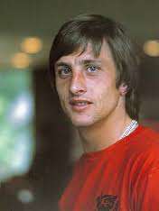

Johan Cruijff
15 min
Molovich
12 juli 2011
In principe is het dus zo dat je uit Bus 21 stapte en op weg was naar de Openbare Bibliotheek om Stijloefeningen van Raymond Queneau te lenen. Je zocht er dus zeg maar al een tijdje naar, maar het was nergens te vinden, dus daarom moest het wel in de bibliotheek te vinden zijn.
 Lezen 2 comments